workflow.RmdThis vignette shows how to validate a simulation before interpreting
its sample-size or power result. The example has three arms
(T, R1, and R2), three correlated
endpoints, and two comparisons: R1 versus T
and R2 versus T.
The important principle is that the final power calculation is the last step, not the first. A power result can be numerically precise while still being wrong if the data-generating model, estimand direction, correlation, or decision rule was specified incorrectly.
The workflow therefore follows this order:
nsim;If a check fails, stop and correct the inputs or implementation
before proceeding. Increasing nsim only reduces Monte Carlo
noise; it does not correct a wrong mean, distribution, estimand
direction, correlation, or equivalence margin.
The estimand is the ratio of means (ROM). For every endpoint and comparison, the equivalence hypotheses are
The
first arm in each comparator is the test arm and the second is the
reference arm. Thus T_vs_R1 means T / R1, and
T_vs_R2 means T / R2. The equivalence limits
are 0.80 and 1.25, and rho = 0.50 is the intended
within-arm correlation between endpoints.
endpoints <- paste0("y", 1:3)
mu_t <- setNames(rep(1.00, 3), endpoints)
mu_r1 <- setNames(rep(1.05, 3), endpoints)
mu_r2 <- setNames(rep(1.04, 3), endpoints)
sigma_t <- setNames(rep(0.20, 3), endpoints)
sigma_r1 <- setNames(rep(0.20, 3), endpoints)
sigma_r2 <- setNames(rep(0.21, 3), endpoints)
comparators <- list(T_vs_R1 = c("T", "R1"), T_vs_R2 = c("T", "R2"))
lower <- list(T_vs_R1 = setNames(rep(0.80, 3), endpoints),
T_vs_R2 = setNames(rep(0.80, 3), endpoints))
upper <- list(T_vs_R1 = setNames(rep(1.25, 3), endpoints),
T_vs_R2 = setNames(rep(1.25, 3), endpoints))Before simulating, check that every comparator uses the intended direction, that the endpoint names match in both arms, and that the margins match the scientific question. If any of these are wrong, correct them now. Later diagnostic plots cannot identify a wrongly specified scientific target.
sampleSize()
Here the pilot is the sample-size calculation itself. It searches for
a candidate design using a moderate nsim and retains the
simulated trials at the selected candidate.
keep_sim_data = TRUE is required for the distribution,
parameter, estimand, and correlation diagnostics.
ss_pilot <- sampleSize(
power = 0.80, alpha = 0.05,
mu_list = list(T = mu_t, R1 = mu_r1, R2 = mu_r2),
sigma_list = list(T = sigma_t, R1 = sigma_r1, R2 = sigma_r2),
rho = 0.50, list_comparator = comparators,
list_y_comparator = list(T_vs_R1 = endpoints, T_vs_R2 = endpoints),
list_lequi.tol = lower, list_uequi.tol = upper,
dtype = "parallel", adjust = "no", k = 3,
distribution = "lnorm", ctype = "ROM", ncores = 1,
nsim = 500, seed = 2026, keep_sim_data = TRUE
)The returned simss object is the k = 3
pilot used for the diagnostic checks below. To evaluate the same pilot
design under the alternative rule that requires at least two of the
three endpoints per comparator, update the pilot. update()
retains the design, endpoint, margin, and simulation settings and
replaces only the supplied arguments:
ss_pilot_k2 <- update(ss_pilot, adjust = "bon", k = 2, seed = 2026)
#> Warning: The adjustment is applied within each comparator's selected endpoint
#> family, not across comparators; the global decision requires all comparator
#> decisions to pass.ss_pilot_k2 is a separate simss object: its
selected sample size and achieved power are based on the 2-of-3 decision
rule and should not be confused with the k = 3 pilot. This
illustrative call deliberately uses the conservative Bonferroni
adjustment due to Type I error inflation. For completeness, the same
pilot design can also be evaluated under the rule that at least one of
the three endpoints must pass for each comparator. This is another
update of the pilot, with k = 1:
ss_pilot_k1 <- update(ss_pilot, adjust = "bon", k = 1, seed = 2027)
#> Warning: The adjustment is applied within each comparator's selected endpoint
#> family, not across comparators; the global decision requires all comparator
#> decisions to pass.These checks answer: “Did the simulator generate the model that I specified?” They are performed before the final power calculation.
The simplified diagnostic interface is
plot_distribution(x, estimand = ..., arms = ..., endpoints = ...).
The estimand can be "mu",
"sigma", "t_value", "DOM",
"ROM", "RR", or "correlation". If
arms or endpoints is omitted, all available
values are displayed. The optional type argument controls
whether the result is shown as a density, histogram, or ECDF (and Q–Q
plot where applicable).
The following plots compare trial-level means and standard deviations with the user-specified values. The finite-sample estimates will vary around the dashed line; the key question is whether they are centered correctly.
plot_distribution(ss_pilot, estimand = "mu")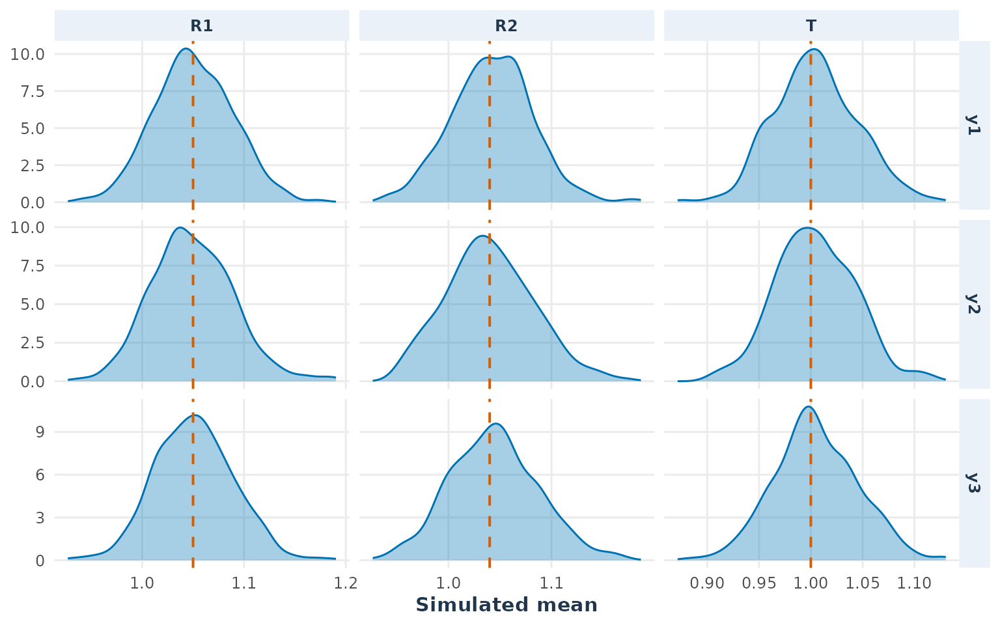
plot_distribution(ss_pilot, estimand = "sigma")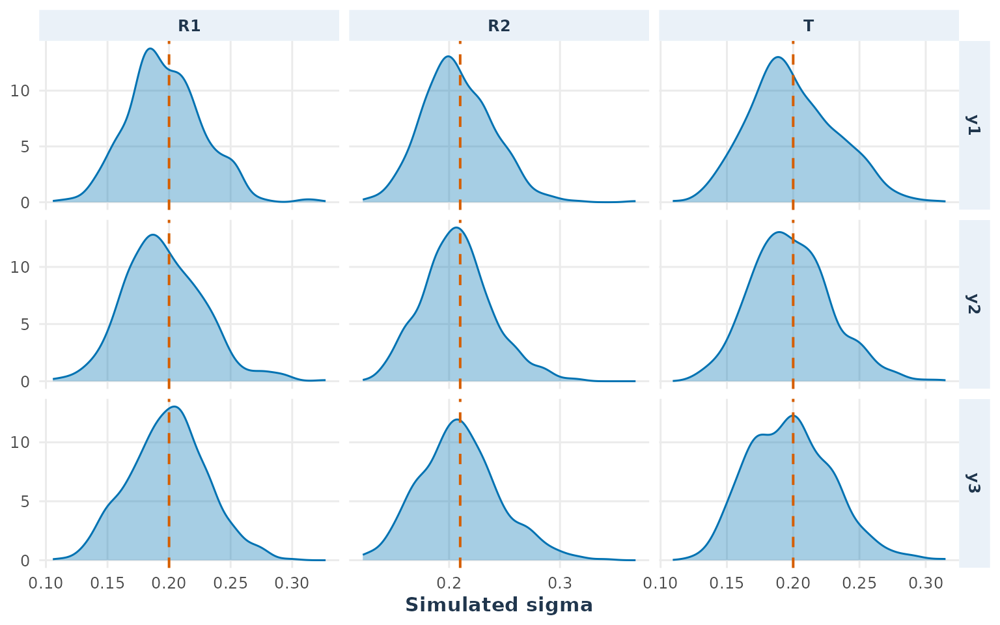
If the distributions are centered away from their references, check the input parameterization and the simulation code. If they are very wide, that may be expected for the pilot sample size; it is a precision issue, not necessarily a bias issue.
This plot checks whether the empirical within-arm endpoint correlations are centered near the specified value of 0.50. It checks dependence between endpoints in the same arm, not dependence between treatment arms.
plot_distribution(ss_pilot, estimand = "correlation")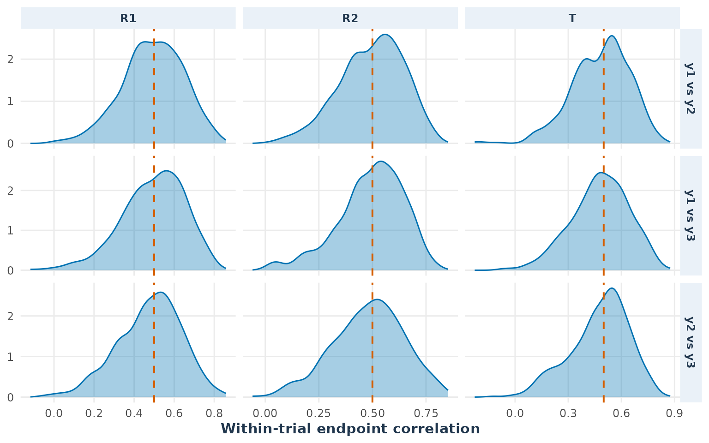
If the correlations are wrong, check rho or
cor_mat, endpoint order, and the covariance construction.
Do not interpret joint power until this check is satisfactory because
endpoint correlation affects the probability that multiple endpoint
tests pass together.
This plot checks the quantity used by the test. Because the
comparators are c(test, reference), the theoretical ROM
values are approximately 0.95 for T_vs_R1 and 0.96 for
T_vs_R2.
plot_distribution(ss_pilot, estimand = "ROM")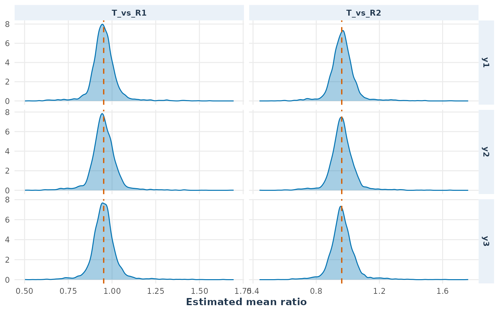
If the distribution is centered near the reciprocal, such as
approximately 0.95 instead of 1.05, the comparator direction has been
reversed. Correct list_comparator before continuing. A
shift that is not a reciprocal usually indicates an issue with the
supplied means or the ROM calculation.
You can also inspect the distributions of the two one-sided test statistics used by the TOST procedure:
plot_distribution(ss_pilot, estimand = "t_value",
arms = c("T", "R1", "R2"))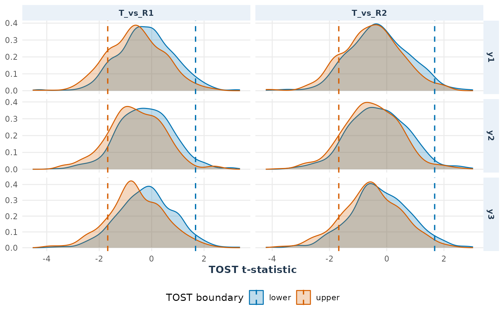
Each panel is one endpoint and comparator. The blue and orange curves are the lower-bound and upper-bound t-statistics. The dashed lines are their one-sided critical values. For an endpoint to pass equivalence, the lower statistic should be to the right of its critical line and the upper statistic should be to the left of its critical line. If one curve frequently lies on the wrong side, that boundary is responsible for many endpoint failures.
These t-statistics are reconstructed from the retained outcomes using
the same continuous parallel-test formulas as the TOST calculation. They
are a diagnostic of the statistic’s distribution, not a replacement for
the trial-level decisions in plot_decision_heatmap() or the
numerical power in summary(ss).
The n_trials argument used in the plots only limits the
observations displayed. It is not the number of Monte Carlo trials used
by the power calculation; that number is nsim.
This step addresses: “Is the number of simulations (nsim) sufficient for a stable estimate?” It assesses precision, not model validity or study sample size. Every simulation estimate has Monte Carlo uncertainty. Simulation-study guidance recommends reporting this uncertainty and choosing the number of repetitions to achieve a stated precision (Siepe et al. 2024).
The plot_stability() checks if the
estimated rejection probability stabilizes as simulations accumulate.
Compare the final value to the target power (0.80). By default, it
diagnoses each comparator separately (overall = FALSE), use
find which individual comparator or endpoint is causing instability. On
the other hand use overall = TRUE for study-level precision
checks, i.e to show the probability that the complete all-comparators
decision passes in a trial.
plot_stability(ss_pilot, overall = TRUE)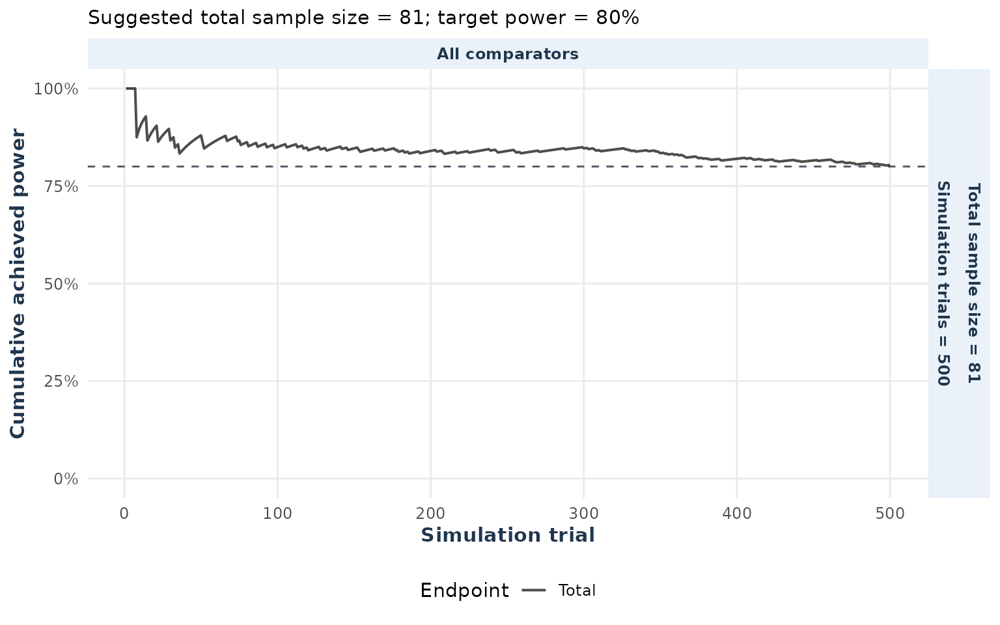
The plot_mc_error(): Displays the
remaining Monte Carlo uncertainty around the power estimate. The title
and labels above the final points show the achieved Monte Carlo error
(half-width of the 95% confidence interval)
plot_mc_error(ss_pilot, overall = TRUE)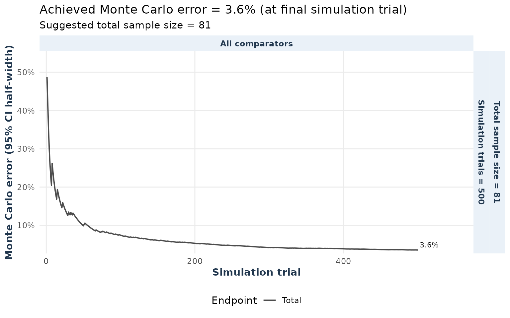
Here, you need to ensure the curve has broadly stabilized and inspect
the displayed Monte Carlo error. If the error is too large for the
desired precision, increase nsim. For example, an estimate
of 0.80 [0.79, 0.81] (half-width ~0.01) meets a 1% precision criterion,
while 0.80 [0.765, 0.835] (half-width ~0.035) does not. In the latter
case, increase nsim—not the participant sample size.
Note: Small fluctuations in the curves are normal. Focus on the final confidence interval width and broad stabilization. If power is below the target power despite precision, increase the participant sample size. If checks fail, correct model inputs and rerun.
This step answers: “If the true estimand (in this example ratio of means (ROM)) is exactly at an equivalence boundary, how often does the study incorrectly conclude equivalence?”
Let us start with a small example so the calculation is easy to see. Consider a trial with:
One comparator (T_vs_R1) and
one endpoint (y1).
Estimand, ROM:
Equivalence limits: Lower
(L = 0.80) and upper (U = 1.25).
Equivalence condition:
The TOST (Two One-Sided Tests) decision requires rejecting both:
For a log-normal outcome with
ctype = "ROM", the boundary is set on the
log-analysis scale. Define
where is the log-analysis mean for arm .
For lower-boundary scenario, the function sets
With and both standard deviations equal to 0.20, this corresponds approximately to
For the upper-boundary scenario, the function sets:
For the same supplied reference mean and standard deviation, this gives approximately and an arithmetic mean ratio of 1.242273, while the log-analysis ROM is exactly 1.25.
A false-equivalence event occurs if the confidence
interval for the estimated log-ratio falls within
(log(0.80), log(1.25)) despite the true ROM being
0.80 or 1.25.
Particularly, the type1Error() function simulates each
scenario individually, reporting the type I error,
i.e. the probability that all required tests incorrectly conclude
equivalence when the true effect is at the boundary of the acceptable
range. For example, if a study requires three endpoints to pass
equivalence tests, this error measures how often all three tests pass
incorrectly at the boundary.
When applied to the simss object with null = "both", the
function evaluates both the lower and upper boundaries separately. With
joint = TRUE, it assesses every comparator–endpoint
combination and reports the Type I error for the
complete trial decision, using the stored k values.
The output table and plot display for each scenario the type I error along with 95% Monte Carlo confidence intervals.
ss_one <- sampleSize(
power = 0.80, alpha = 0.05,
mu_list = list(T = mu_t["y1"], R1 = mu_r1["y1"]),
sigma_list = list(T = sigma_t["y1"], R1 = sigma_r1["y1"]),
list_comparator = list(T_vs_R1 = c("T", "R1")),
list_y_comparator = list(T_vs_R1 = "y1"),
list_lequi.tol = list(T_vs_R1 = c(y1 = 0.80)),
list_uequi.tol = list(T_vs_R1 = c(y1 = 1.25)),
dtype = "parallel", distribution = "lnorm", ctype = "ROM",
lower = 10, upper = 100, nsim = 1000, seed = 2026, ncores = 1
)
type1_one <- type1Error(x = ss_one, null = "both", joint = TRUE)
print(type1_one)
#> Joint empirical Type I error analysis
#> Boundary configurations: 2
#> Boundary Comparator Endpoint NullCount Type1_Error Lower Upper
#> lower T_vs_R1 y1 1 0.05 0.03769546 0.06587483
#> upper T_vs_R1 y1 1 0.04 0.02908471 0.05457906
#> Simultaneous_Upper
#> 0.06539049
#> 0.05407270
#> Global worst-case Type I error: 0.0500 [0.0377, 0.0659]
#> Simultaneous 95.0% upper bound for global Type I error: 0.0654
#> Global scenario: T_vs_R1, y1, lower boundary
plot(type1_one)
#> Warning: Removed 1 row containing missing values or values outside the scale range
#> (`geom_point()`).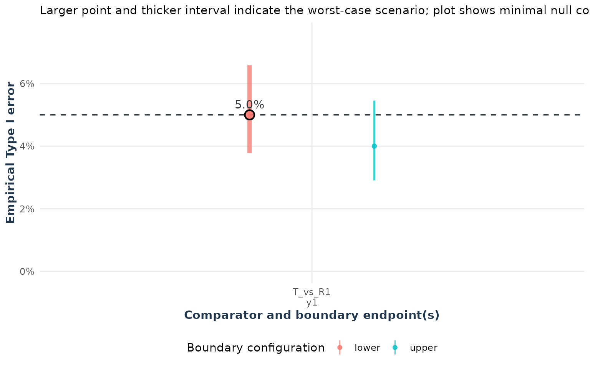
To estimate the global Type I error, use the least favorable scenario (the one with the highest type I error). In the plot, this scenario is highlighted with a thicker point and confidence line. The target quantity is
the highest probability of a false complete-trial conclusion over the null parameter space. This is the standard definition of the size of a test for a composite null hypothesis (Lehmann and Romano 2005, chap. 3). In this multiple-endpoint setting, the least-favorable-configuration literature applies the same principle by searching for the null configuration that maximizes the rejection probability (Ristl et al. 2019). In the one-endpoint example, the boundary scenarios are the complete null configuration.
The type1Error() function evaluates the prespecified
boundary grid and reports the largest empirical complete-trial
success probability as an approximation to the global
Type I error; probabilities are therefore not averaged across
scenarios. This is a finite-grid estimate, not a proof that the reported
scenario is the supremum over all effect sizes and nuisance
parameters.
Finally, compare the global Type I error point estimate and confidence interval against the nominal value (here 5%):
Contains the nominal value: Compatible with the nominal value at this simulation precision; this is not a formal calibration test.
Entirely above the nominal value: Evidence of possible global inflation, subject to Monte Carlo error and the adequacy of the scenario grid.
Entirely below the nominal value: Evidence of conservatism, subject to Monte Carlo error and the adequacy of the scenario grid.
The one-endpoint example is illustrative, but in more complex cases (e.g., the pilot example), the analysis extends to every endpoint in both comparisons and for both boundaries (lower and upper).
For multiple endpoints, the null configuration depends on the
decision rule: when all endpoints are required (k = m), the
global null is the union of the component nulls; when only
k < m endpoints are required, it is a
partial-conjunction null.
Ristl et al. (Ristl
et al. 2019) describe the least-favorable-configuration
principle for multiple endpoints. In the all-required case, a candidate
least-favorable configuration has one component at its null boundary and
the other components at favorable alternatives. For a
k-of-m rule, the corresponding minimal null
has
non-equivalent endpoints at boundaries and the remaining
k - 1 endpoints at favorable alternatives.
For one fixed selected comparator, the number of configurations is
Here,
chooses the r boundary endpoints and
chooses whether each boundary is lower (L) or upper
(U). If the analysis has
comparators and the grid repeats these configurations with each
comparator selected in turn, the total number of configurations is
For example, with two comparators and three endpoints, this gives 12,
24, and 16 configurations for k = 3, k = 2,
and k = 1, respectively. Additional nuisance-parameter
values may be added for robustness. The configuration grid is a finite
approximation to the null parameter space.
Particularly, for each scenario, the selected component is placed at its equivalence boundary, while other components are set at favorable alternatives, here the midpoint of their equivalence interval:
For continuous outcomes:
(L + U) / 2 (difference) or sqrt(L * U)
(ratio).
For log-normal ROM, the midpoint is converted to an arithmetic mean using variance-based calibration.
For Poisson and negative-binomial outcomes,
sqrt(L * U) is used, but absolute rates, exposure, and
dispersion (for negative binomial) affect precision.
The continuous-outcome midpoint is motivated by Anderson’s
inequality: for a fixed-covariance Gaussian estimator, the probability
of falling in a symmetric convex acceptance region is maximized when its
mean is at the centre of that region (Anderson 1955). This gives
(L + U) / 2 on a difference scale and
sqrt(L * U) on a ratio scale, because the latter is the
midpoint on the log-ratio scale. In a multiple-endpoint equivalence
problem, this is used as a reproducible candidate configuration for the
non-selected components, alongside the joint-equivalence framework
described by Quan et al. (Quan et al. 2001). It is not a universal
theorem for Poisson or negative-binomial models: their nuisance rates,
exposure, and dispersion can change the joint probability, so those
configurations may need an additional grid or optimization check.
The midpoint is a practical finite candidate for a favorable alternative, not a universal least-favorable result for Poisson or negative-binomial models. For count outcomes, the grid should be expanded over plausible rates, exposure, dispersion, and dependence values when those nuisance parameters could change the maximizing configuration.
k = 3: all endpoints are required
When k = m, the decision for the complete trial is an
intersection–union test (IUT). For three endpoints and
two comparisons, the trial passes only when
is true. The global null is the union of the component nulls: at least one of the six component equivalence claims is false. Since the final decision requires an intersection of component decisions, testing each component TOST at level α does not require an additional endpoint-wise multiplicity correction in this all-required setting. This is the usual IUT logic for multiple-endpoint equivalence testing (Berger and Hsu 1996).
For k = 3, one endpoint is placed at a boundary. For
T_vs_R1, the six configurations are
(L, M, M) (U, M, M)
(M, L, M) (M, U, M)
(M, M, L) (M, M, U)For each of these, the T_vs_R2 endpoints are
(M, M, M). The same six configurations are then repeated
with T_vs_R2 as the selected null comparator and
T_vs_R1 equal to (M, M, M).
type1_global <- type1Error(x = ss_pilot, null = "both", joint = TRUE)
print(type1_global)
#> Joint empirical Type I error analysis
#> Boundary configurations: 52
#> Boundary Comparator Endpoint NullCount Type1_Error Lower
#> lower T_vs_R1 y1 1 0.032 0.0190254452
#> upper T_vs_R1 y1 1 0.042 0.0268352453
#> lower T_vs_R1 y2 1 0.042 0.0268352453
#> upper T_vs_R1 y2 1 0.046 0.0300383801
#> lower T_vs_R1 y3 1 0.032 0.0190254452
#> upper T_vs_R1 y3 1 0.036 0.0221111654
#> lower T_vs_R1 y1+y2 2 0.008 0.0025657927
#> upper/lower T_vs_R1 y1+y2 2 0.000 0.0000000000
#> lower/upper T_vs_R1 y1+y2 2 0.000 0.0000000000
#> upper T_vs_R1 y1+y2 2 0.006 0.0015508542
#> lower T_vs_R1 y1+y3 2 0.006 0.0015508542
#> upper/lower T_vs_R1 y1+y3 2 0.000 0.0000000000
#> lower/upper T_vs_R1 y1+y3 2 0.000 0.0000000000
#> upper T_vs_R1 y1+y3 2 0.004 0.0006931365
#> lower T_vs_R1 y2+y3 2 0.008 0.0025657927
#> upper/lower T_vs_R1 y2+y3 2 0.000 0.0000000000
#> lower/upper T_vs_R1 y2+y3 2 0.000 0.0000000000
#> upper T_vs_R1 y2+y3 2 0.014 0.0061482689
#> lower T_vs_R1 y1+y2+y3 3 0.002 0.0001044091
#> upper/lower/lower T_vs_R1 y1+y2+y3 3 0.000 0.0000000000
#> lower/upper/lower T_vs_R1 y1+y2+y3 3 0.000 0.0000000000
#> upper/upper/lower T_vs_R1 y1+y2+y3 3 0.000 0.0000000000
#> lower/lower/upper T_vs_R1 y1+y2+y3 3 0.000 0.0000000000
#> upper/lower/upper T_vs_R1 y1+y2+y3 3 0.000 0.0000000000
#> lower/upper/upper T_vs_R1 y1+y2+y3 3 0.000 0.0000000000
#> upper T_vs_R1 y1+y2+y3 3 0.004 0.0006931365
#> lower T_vs_R2 y1 1 0.036 0.0221111654
#> upper T_vs_R2 y1 1 0.034 0.0205612556
#> lower T_vs_R2 y2 1 0.046 0.0300383801
#> upper T_vs_R2 y2 1 0.046 0.0300383801
#> lower T_vs_R2 y3 1 0.040 0.0252490565
#> upper T_vs_R2 y3 1 0.024 0.0130517839
#> lower T_vs_R2 y1+y2 2 0.008 0.0025657927
#> upper/lower T_vs_R2 y1+y2 2 0.000 0.0000000000
#> lower/upper T_vs_R2 y1+y2 2 0.000 0.0000000000
#> upper T_vs_R2 y1+y2 2 0.014 0.0061482689
#> lower T_vs_R2 y1+y3 2 0.008 0.0025657927
#> upper/lower T_vs_R2 y1+y3 2 0.000 0.0000000000
#> lower/upper T_vs_R2 y1+y3 2 0.000 0.0000000000
#> upper T_vs_R2 y1+y3 2 0.006 0.0015508542
#> lower T_vs_R2 y2+y3 2 0.008 0.0025657927
#> upper/lower T_vs_R2 y2+y3 2 0.000 0.0000000000
#> lower/upper T_vs_R2 y2+y3 2 0.000 0.0000000000
#> upper T_vs_R2 y2+y3 2 0.010 0.0036873010
#> lower T_vs_R2 y1+y2+y3 3 0.004 0.0006931365
#> upper/lower/lower T_vs_R2 y1+y2+y3 3 0.000 0.0000000000
#> lower/upper/lower T_vs_R2 y1+y2+y3 3 0.000 0.0000000000
#> upper/upper/lower T_vs_R2 y1+y2+y3 3 0.000 0.0000000000
#> lower/lower/upper T_vs_R2 y1+y2+y3 3 0.000 0.0000000000
#> upper/lower/upper T_vs_R2 y1+y2+y3 3 0.000 0.0000000000
#> lower/upper/upper T_vs_R2 y1+y2+y3 3 0.000 0.0000000000
#> upper T_vs_R2 y1+y2+y3 3 0.008 0.0025657927
#> Upper Simultaneous_Upper
#> 0.052559878 0.06430578
#> 0.064536740 0.07745598
#> 0.064536740 0.07745598
#> 0.069253580 0.08259568
#> 0.052559878 0.06430578
#> 0.057386056 0.06962373
#> 0.021799801 0.02937247
#> 0.009504683 0.01379788
#> 0.009504683 0.01379788
#> 0.018951807 0.02596010
#> 0.018951807 0.02596010
#> 0.009504683 0.01379788
#> 0.009504683 0.01379788
#> 0.015997243 0.02234328
#> 0.021799801 0.02937247
#> 0.009504683 0.01379788
#> 0.009504683 0.01379788
#> 0.029937173 0.03887309
#> 0.012885458 0.01840095
#> 0.009504683 0.01379788
#> 0.009504683 0.01379788
#> 0.009504683 0.01379788
#> 0.009504683 0.01379788
#> 0.009504683 0.01379788
#> 0.009504683 0.01379788
#> 0.015997243 0.02234328
#> 0.057386056 0.06962373
#> 0.054979471 0.06697541
#> 0.069253580 0.08259568
#> 0.069253580 0.08259568
#> 0.062163899 0.07486270
#> 0.042726845 0.05337262
#> 0.021799801 0.02937247
#> 0.009504683 0.01379788
#> 0.009504683 0.01379788
#> 0.029937173 0.03887309
#> 0.021799801 0.02937247
#> 0.009504683 0.01379788
#> 0.009504683 0.01379788
#> 0.018951807 0.02596010
#> 0.021799801 0.02937247
#> 0.009504683 0.01379788
#> 0.009504683 0.01379788
#> 0.024569311 0.03264068
#> 0.015997243 0.02234328
#> 0.009504683 0.01379788
#> 0.009504683 0.01379788
#> 0.009504683 0.01379788
#> 0.009504683 0.01379788
#> 0.009504683 0.01379788
#> 0.009504683 0.01379788
#> 0.021799801 0.02937247
#> Global worst-case Type I error: 0.0460 [0.0300, 0.0693]
#> Simultaneous 95.0% upper bound for global Type I error: 0.0826
#> Global scenario: T_vs_R1, y2, upper boundary
plot(type1_global)
#> Warning: Removed 11 rows containing missing values or values outside the scale range
#> (`geom_point()`).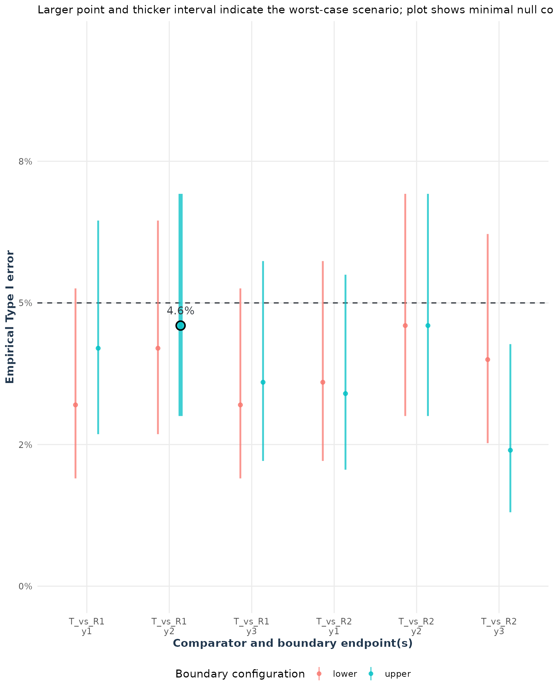
The corresponding simulated error is the probability that the complete trial decision passes, not merely the probability that the boundary component passes.
k = 2: at least two endpoints are required
The claim is that at least two of three endpoints are equivalent.
This is a partial-conjunction rule, not the
all-required IUT. Its null requires at least
non-equivalent endpoints. Therefore, for T_vs_R1, the 12
candidate configurations are
(L, L, M) (L, U, M) (U, L, M) (U, U, M)
(L, M, L) (L, M, U) (U, M, L) (U, M, U)
(M, L, L) (M, L, U) (M, U, L) (M, U, U)In each case, T_vs_R2 is (M, M, M).
Repeating the 12 configurations with T_vs_R2 selected
gives
Because the decision is “at least two,” a false claim can occur when
an interior endpoint passes and one of the two boundary endpoints passes
falsely. Therefore, an endpoint-wise multiplicity adjustment is needed
for k < m; adjust = "bon" is a conservative
starting point, and the complete-trial Type I error must be checked
empirically (Benjamini and Heller 2008).
type1_global_k2 <- type1Error(x = ss_pilot_k2, null = "both", joint = TRUE)
#> Warning: The adjustment is applied within each comparator's selected endpoint
#> family, not across comparators; the global decision requires all comparator
#> decisions to pass.
print(type1_global_k2)
#> Joint empirical Type I error analysis
#> Boundary configurations: 40
#> Boundary Comparator Endpoint NullCount Type1_Error Lower
#> lower T_vs_R1 y1+y2 2 0.016 0.0074584371
#> upper/lower T_vs_R1 y1+y2 2 0.030 0.0175049931
#> lower/upper T_vs_R1 y1+y2 2 0.018 0.0088094113
#> upper T_vs_R1 y1+y2 2 0.024 0.0130517839
#> lower T_vs_R1 y1+y3 2 0.010 0.0036873010
#> upper/lower T_vs_R1 y1+y3 2 0.014 0.0061482689
#> lower/upper T_vs_R1 y1+y3 2 0.022 0.0116103433
#> upper T_vs_R1 y1+y3 2 0.026 0.0145162787
#> lower T_vs_R1 y2+y3 2 0.008 0.0025657927
#> upper/lower T_vs_R1 y2+y3 2 0.024 0.0130517839
#> lower/upper T_vs_R1 y2+y3 2 0.038 0.0236740836
#> upper T_vs_R1 y2+y3 2 0.036 0.0221111654
#> lower T_vs_R1 y1+y2+y3 3 0.000 0.0000000000
#> upper/lower/lower T_vs_R1 y1+y2+y3 3 0.000 0.0000000000
#> lower/upper/lower T_vs_R1 y1+y2+y3 3 0.000 0.0000000000
#> upper/upper/lower T_vs_R1 y1+y2+y3 3 0.002 0.0001044091
#> lower/lower/upper T_vs_R1 y1+y2+y3 3 0.000 0.0000000000
#> upper/lower/upper T_vs_R1 y1+y2+y3 3 0.002 0.0001044091
#> lower/upper/upper T_vs_R1 y1+y2+y3 3 0.012 0.0048872944
#> upper T_vs_R1 y1+y2+y3 3 0.012 0.0048872944
#> lower T_vs_R2 y1+y2 2 0.030 0.0175049931
#> upper/lower T_vs_R2 y1+y2 2 0.030 0.0175049931
#> lower/upper T_vs_R2 y1+y2 2 0.036 0.0221111654
#> upper T_vs_R2 y1+y2 2 0.026 0.0145162787
#> lower T_vs_R2 y1+y3 2 0.030 0.0175049931
#> upper/lower T_vs_R2 y1+y3 2 0.030 0.0175049931
#> lower/upper T_vs_R2 y1+y3 2 0.024 0.0130517839
#> upper T_vs_R2 y1+y3 2 0.022 0.0116103433
#> lower T_vs_R2 y2+y3 2 0.030 0.0175049931
#> upper/lower T_vs_R2 y2+y3 2 0.038 0.0236740836
#> lower/upper T_vs_R2 y2+y3 2 0.026 0.0145162787
#> upper T_vs_R2 y2+y3 2 0.026 0.0145162787
#> lower T_vs_R2 y1+y2+y3 3 0.010 0.0036873010
#> upper/lower/lower T_vs_R2 y1+y2+y3 3 0.006 0.0015508542
#> lower/upper/lower T_vs_R2 y1+y2+y3 3 0.002 0.0001044091
#> upper/upper/lower T_vs_R2 y1+y2+y3 3 0.002 0.0001044091
#> lower/lower/upper T_vs_R2 y1+y2+y3 3 0.004 0.0006931365
#> upper/lower/upper T_vs_R2 y1+y2+y3 3 0.006 0.0015508542
#> lower/upper/upper T_vs_R2 y1+y2+y3 3 0.004 0.0006931365
#> upper T_vs_R2 y1+y2+y3 3 0.008 0.0025657927
#> Upper Simultaneous_Upper
#> 0.032555702 0.04108766
#> 0.050126186 0.06069039
#> 0.035139646 0.04400921
#> 0.042726845 0.05250261
#> 0.024569311 0.03192777
#> 0.029937173 0.03810837
#> 0.040221837 0.04971085
#> 0.045211262 0.05526091
#> 0.021799801 0.02868876
#> 0.042726845 0.05250261
#> 0.059780585 0.07126775
#> 0.057386056 0.06865388
#> 0.009504683 0.01328025
#> 0.009504683 0.01328025
#> 0.009504683 0.01328025
#> 0.012885458 0.01782873
#> 0.009504683 0.01328025
#> 0.012885458 0.01782873
#> 0.027277839 0.03506020
#> 0.027277839 0.03506020
#> 0.050126186 0.06069039
#> 0.050126186 0.06069039
#> 0.057386056 0.06865388
#> 0.045211262 0.05526091
#> 0.050126186 0.06069039
#> 0.050126186 0.06069039
#> 0.042726845 0.05250261
#> 0.040221837 0.04971085
#> 0.050126186 0.06069039
#> 0.059780585 0.07126775
#> 0.045211262 0.05526091
#> 0.045211262 0.05526091
#> 0.024569311 0.03192777
#> 0.018951807 0.02530864
#> 0.012885458 0.01782873
#> 0.012885458 0.01782873
#> 0.015997243 0.02172827
#> 0.018951807 0.02530864
#> 0.015997243 0.02172827
#> 0.021799801 0.02868876
#> Global worst-case Type I error: 0.0380 [0.0237, 0.0598]
#> Simultaneous 95.0% upper bound for global Type I error: 0.0713
#> Global scenario: T_vs_R1, y2+y3, lower/upper boundary
plot(type1_global_k2)
#> Warning: Removed 23 rows containing missing values or values outside the scale range
#> (`geom_point()`).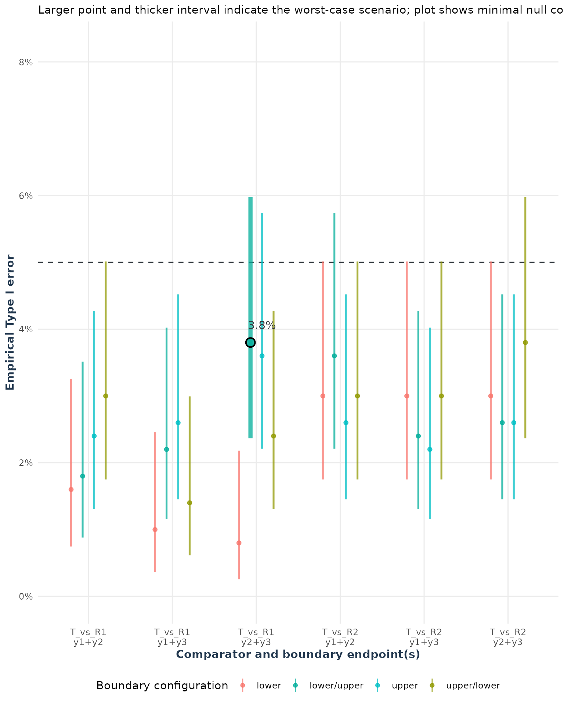
The default joint plot displays only the minimal null configurations,
with m - k + 1 boundary endpoints (two endpoints here). The
numerical global Type I error still uses the complete grid, including
configurations with three boundary endpoints. To display every evaluated
configuration, use
plot(type1_global_k2, null_count = "all").
k = 1: at least one endpoint is required
The claim is that at least one endpoint is equivalent. Its null
requires all three endpoints to be non-equivalent, so
.
For T_vs_R1, the eight candidate configurations are
(L, L, L) (L, L, U) (L, U, L) (L, U, U)
(U, L, L) (U, L, U) (U, U, L) (U, U, U)In each case, T_vs_R2 is (M, M, M).
Repeating these eight configurations with T_vs_R2 selected
gives
type1_global_k1 <- type1Error(x = ss_pilot_k1, null = "both", joint = TRUE)
#> Warning: The adjustment is applied within each comparator's selected endpoint
#> family, not across comparators; the global decision requires all comparator
#> decisions to pass.
print(type1_global_k1)
#> Joint empirical Type I error analysis
#> Boundary configurations: 16
#> Boundary Comparator Endpoint NullCount Type1_Error Lower
#> lower T_vs_R1 y1+y2+y3 3 0.014 0.006148269
#> upper/lower/lower T_vs_R1 y1+y2+y3 3 0.040 0.025249056
#> lower/upper/lower T_vs_R1 y1+y2+y3 3 0.038 0.023674084
#> upper/upper/lower T_vs_R1 y1+y2+y3 3 0.054 0.036551387
#> lower/lower/upper T_vs_R1 y1+y2+y3 3 0.040 0.025249056
#> upper/lower/upper T_vs_R1 y1+y2+y3 3 0.056 0.038199110
#> lower/upper/upper T_vs_R1 y1+y2+y3 3 0.056 0.038199110
#> upper T_vs_R1 y1+y2+y3 3 0.064 0.044856884
#> lower T_vs_R2 y1+y2+y3 3 0.038 0.023674084
#> upper/lower/lower T_vs_R2 y1+y2+y3 3 0.060 0.041515247
#> lower/upper/lower T_vs_R2 y1+y2+y3 3 0.056 0.038199110
#> upper/upper/lower T_vs_R2 y1+y2+y3 3 0.062 0.043183022
#> lower/lower/upper T_vs_R2 y1+y2+y3 3 0.044 0.028431907
#> upper/lower/upper T_vs_R2 y1+y2+y3 3 0.056 0.038199110
#> lower/upper/upper T_vs_R2 y1+y2+y3 3 0.048 0.031654072
#> upper T_vs_R2 y1+y2+y3 3 0.054 0.036551387
#> Upper Simultaneous_Upper
#> 0.02993717 0.03537130
#> 0.06216390 0.07025447
#> 0.05978059 0.06771179
#> 0.07858655 0.08767767
#> 0.06216390 0.07025447
#> 0.08090132 0.09012174
#> 0.08090132 0.09012174
#> 0.09009660 0.09980682
#> 0.05978059 0.06771179
#> 0.08551115 0.09498168
#> 0.08090132 0.09012174
#> 0.08780679 0.09739841
#> 0.06689977 0.07529539
#> 0.08090132 0.09012174
#> 0.07159870 0.08028309
#> 0.07858655 0.08767767
#> Global worst-case Type I error: 0.0640 [0.0449, 0.0901]
#> Simultaneous 95.0% upper bound for global Type I error: 0.0998
#> Global scenario: T_vs_R1, y1+y2+y3, upper boundary
plot(type1_global_k1)
#> Warning: Removed 15 rows containing missing values or values outside the scale range
#> (`geom_point()`).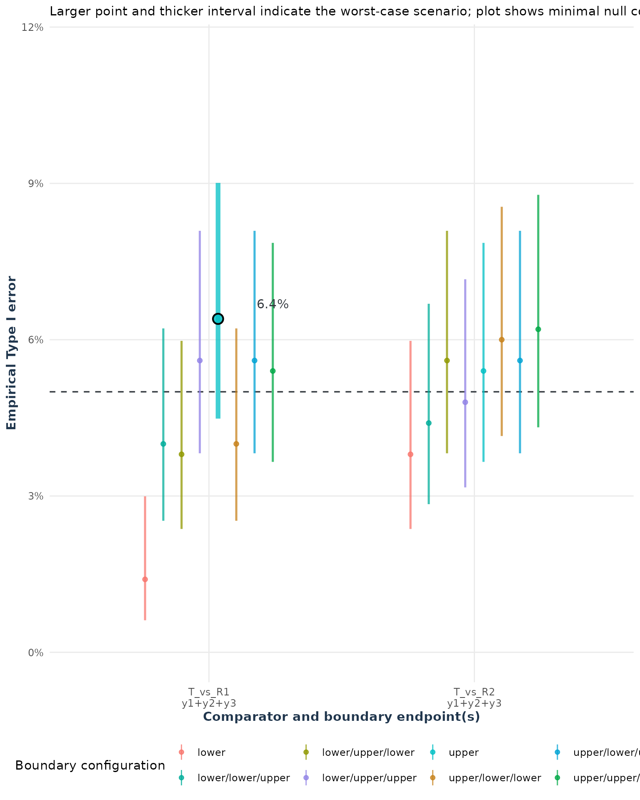
This is the most permissive rule: any one boundary endpoint passing falsely can complete the claim. A multiplicity adjustment is therefore essential, and the global result should be checked using the largest joint Type I-error estimate and its Monte Carlo interval.
For every configuration above, the simulated trial must satisfy the
complete study decision: the required number of endpoints must pass for
T_vs_R1 and for T_vs_R2 in
the same trial.
The reported global Type I error is an empirical approximation of the worst-case scenario among the evaluated boundary configurations. Compare the global interval to the nominal value (5%) line as we did in the previous section.
For k = m, adjust = "no" is generally
appropriate for the endpoint IUT. For k < m, use
Mielke’s strong adjust = "t" calibration
alpha / (m - k + 1) when strong control over partial null
configurations is required. The package’s adjust = "k"
method uses k * alpha / m and is a weak complete-null
calibration; it should be used only when that estimand is the
prespecified objective. Confirm the global performance with
type1Error().
Only after the pilot has passed the distribution, estimand,
correlation, Monte Carlo, and Type I-error checks should the model be
used for final planning. The final call can use a larger
nsim than the pilot. Retaining raw data is optional at this
stage; it is useful if the final result also needs an audit trail of
simulated outcomes.
ss <- sampleSize(
power = 0.80, alpha = 0.05,
mu_list = list(T = mu_t, R1 = mu_r1, R2 = mu_r2),
sigma_list = list(T = sigma_t, R1 = sigma_r1, R2 = sigma_r2),
rho = 0.50, list_comparator = comparators,
list_y_comparator = list(T_vs_R1 = endpoints, T_vs_R2 = endpoints),
list_lequi.tol = lower, list_uequi.tol = upper,
dtype = "parallel", ctype = "ROM", distribution = "lnorm",
adjust = "no", k = 3, ncores = 1, nsim = 2000, seed = 2026,
keep_sim_data = TRUE
)In this example, the final run uses more trials than the 500-trial
pilot. If the final power decision is close to 0.80, increase this to
5,000 trials and use the final value displayed by
plot_mc_error(ss) as a stricter precision check. The
appropriate choice is the smallest nsim that gives a stable
estimate and a confidence interval narrow enough for the planned
conclusion.
Now inspect the proposed sample size, achieved power, and Monte Carlo
interval. For a parallel design, n is the base sample size
used to derive the arm allocations; the summary also reports the total
sample size.
print(ss)
#> Sample Size Calculation Results
#> -------------------------------------------------------------
#> Study Design: parallel trial targeting 80% power with a 5% type-I error.
#>
#> Comparisons:
#> T vs. R1
#> - Endpoints Tested: y1, y2, y3
#> (multiple co-primary endpoints, m = 3 )
#> T vs. R2
#> - Endpoints Tested: y1, y2, y3
#> (multiple co-primary endpoints, m = 3 )
#> -------------------------------------------------------------
#> Parameter Value
#> Total Sample Size 81
#> Achieved Power 81.4
#> Power Confidence Interval 79.6 - 83
#> -------------------------------------------------------------
summary(ss)
#> Sample Size Summary
#> ----------------------
#> Design type : parallel
#> Distribution : lnorm
#> Comparison type : ROM
#> Estimand : arithmetic mean ratio
#> Hypotheses : H0: ratio <= L or >= U; H1: L < ratio < U (tested on the log scale)
#> Alpha : 0.05
#> Target power : 0.8000
#> Achieved power : 0.8135
#>
#> Equivalence Margins:
#> Comparison Endpoint Lower Upper
#> T_vs_R1 y1 0.8 1.25
#> T_vs_R1 y2 0.8 1.25
#> T_vs_R1 y3 0.8 1.25
#> T_vs_R2 y1 0.8 1.25
#> T_vs_R2 y2 0.8 1.25
#> T_vs_R2 y3 0.8 1.25
#>
#> Estimated Sample Size:
#> n_T n_R1 n_R2 n_total
#> 27 27 27 81
confint(ss)
#> Confidence Interval for Achieved Power (95%):
#> 0.8135 [0.7956, 0.8302]
plot(ss)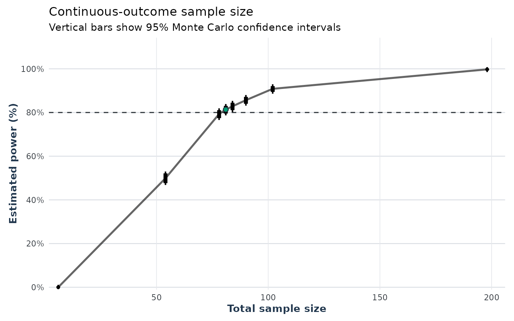
The result is acceptable only if the model checks passed, the Monte
Carlo interval is sufficiently narrow, the Type I-error assessment is
reasonable, and achieved power is close to the target. If the final
power is too low or too imprecise, increase the planned sample size or
nsim as appropriate. If it differs because a diagnostic
failed, correct the model inputs and rerun the full workflow rather than
simply increasing the sample size.
Finally, inspect endpoint-level decisions to identify which endpoint or comparison drives failures of the global rule. This is a diagnostic for the final result, not a replacement for the joint power or Type I-error assessment.
In addition, the
plot_decision_heatmap() helps identify
which endpoints or comparisons cause failures in the global decision
rule by visualizing pass (green) or fail (orange) results for each
simulated trial. Each row represents an endpoint, each facet a
comparator (e.g., T_vs_R1), and the Total
row shows the combined decision for that comparator—green only
if all required endpoints pass. If a specific endpoint or comparator has
more orange cells, it may be the bottleneck. Use this alongside
summary(ss) and plot(ss): the summary provides
numerical power, while the heatmap highlights which endpoints or
comparisons are failing. Isolated orange cells are normal, but
persistent bands indicate systematic issues.
plot_decision_heatmap(ss, display = c("T_vs_R1", "T_vs_R2"))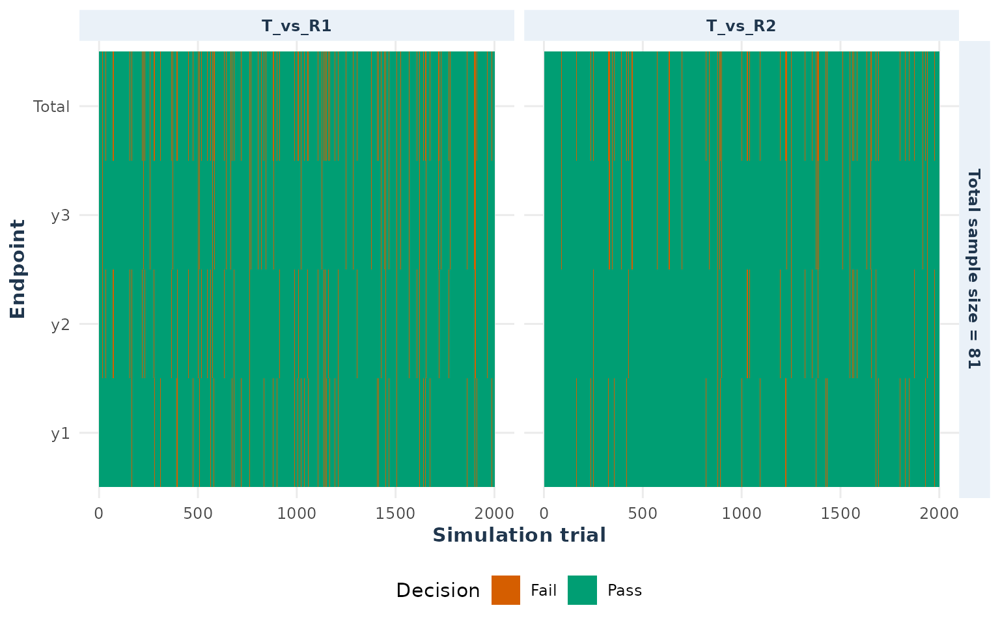